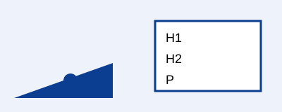

Acessibilidade na vida cotidiana
Acessibilidade é garantir que todas as pessoas tenham acesso à informação, aos espaços e à comunicação. Este site reúne textos sobre como ela aparece no dia a dia.
O que você vai encontrar
- O que é acessibilidade e por que ela importa
- Barreiras no dia a dia de cada pessoa
- Tecnologia assistiva em casa, no trabalho e na escola
- Boas práticas para uma web acessível
- Fale conosco
